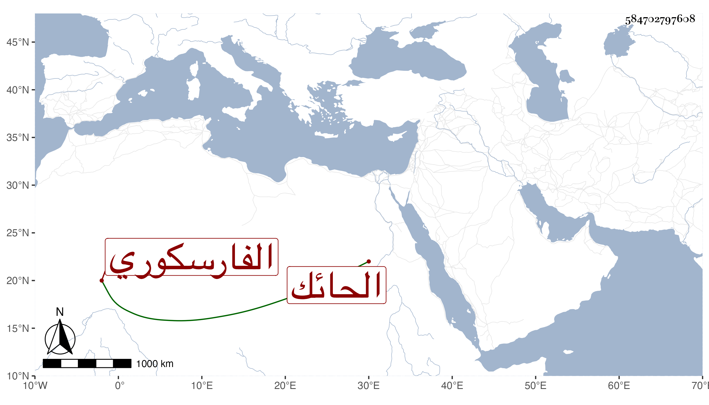

0902Sakhawi.DawLamic.ITO20230111-ara1.EIS1600.584702797608
Biography ID: 584702797608
866
علي بن عبيد بن عبد الرحمن الفارسكوري الحائك بها ويعرف بابن المزين . ولد بعد القرن بيسير وتعانى النظم مع عاميته بحيث نظم مما كتبت عنه منه في فارسكور قوله في حليمة :
| أقول لظبية ملكت فؤادي | طوال الدهر وهي به مقيمه |
| قتلت الصب بالهجران قالت | أتقتل بالجفا وأنا حليمه |
وأشياء كتبتها في موضع آخر .
